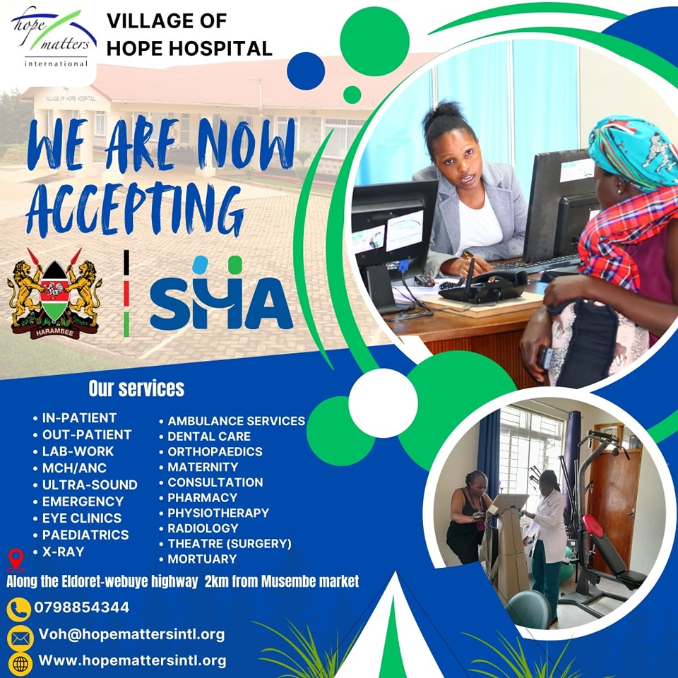
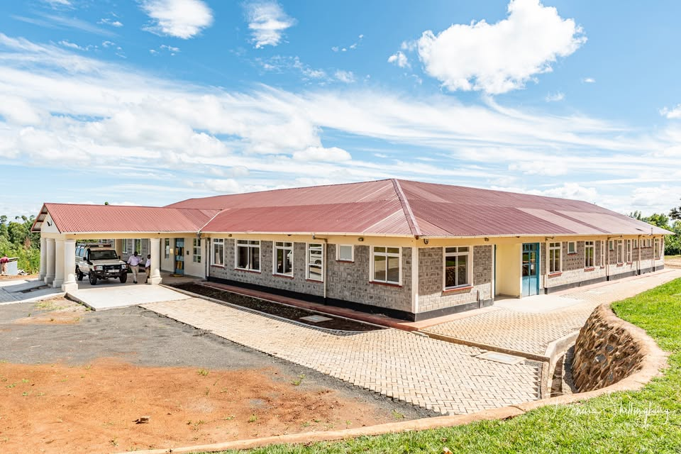
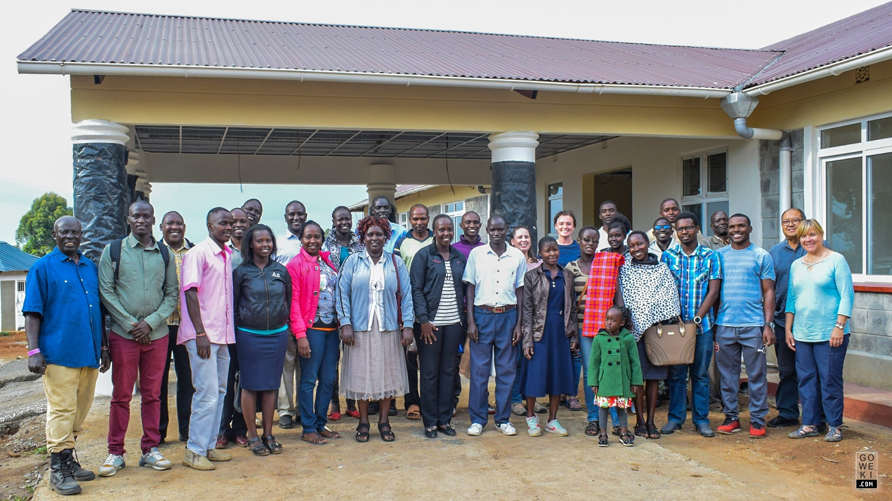
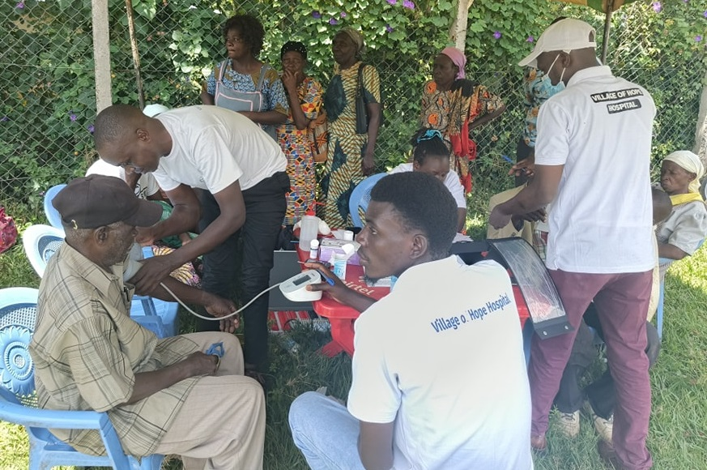
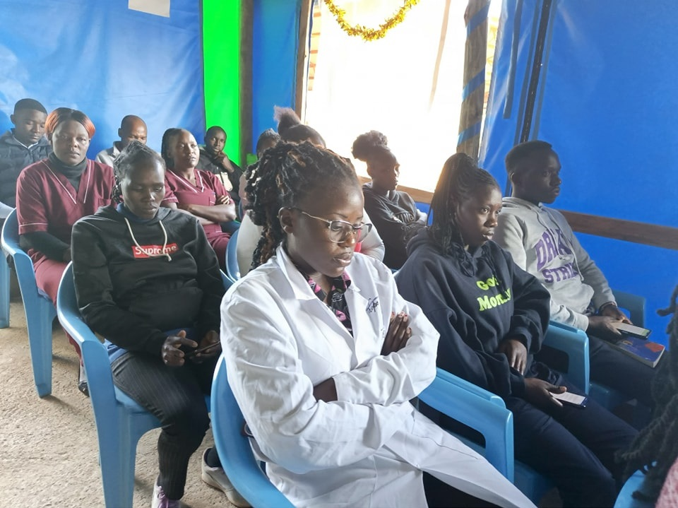
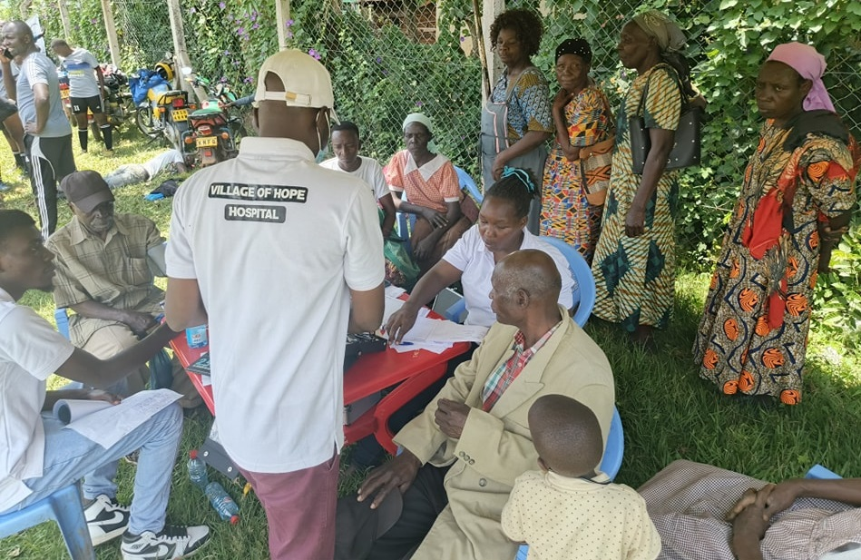

Welcome to Village of Hope Hospital (VOH)
Village of Hope Hospital is a Christian non-profit facility dedicated to providing holistic healthcare in the highlands of Western Kenya. Our strategic location allows us to serve patients from Uasin Gishu, Kakamega, Nandi, and surrounding counties. We are committed to meeting the physical, emotional, and spiritual needs of our community with compassion and excellence
Discover More About Our ServicesOur Gallery






Our Services
Comprehensive Healthcare
Comprehensive care for all ages.
Community Advancement
24/7 emergency services.
Spiritual Care through our Chaplaincy Team
Specialized care for all.